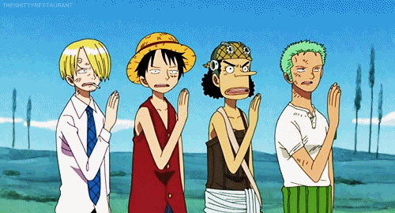
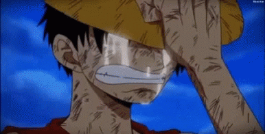
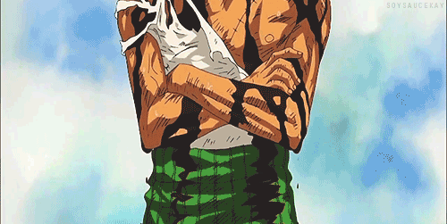

ONE PIECE
ONE PIECE
¿Que es ONE PIECE?
ONE PIECE ( ナ ル ト ) El one piece es el tesoro mas importante de one piece que "perteneció" a Gol D. Roger. Se dice que está en raftel la última isla de grand line y fue explorada solamente por los piratas de roger Antiguamente existía un reino que se llama "Gran Reino"(aún no se sabe su nombre) era un reino próspero y poderoso pero hace 800 años fue destruído al final del siglo vacío y se deduce que quién lo destruyó fue los 20 reinos, que despues de su destrucción permitió que los 20 reinos hiciesen el actual gobierno mundial. Y el one piece significa "una pieza" es como si al trono faltase una pieza mejor dicho un rey para que reine el reino es por eso que luffy es el one piece la persona que hereda la voluntad y es la pieza para reinar el gran reino. Clik para leer más

Sigueme en:


¿LO ULTIMO DE ONE PIECE?
One piece es un anime que ha causado mucha revelacion durante muchos años, lleva mas de 10 años siendo transmitido y increiblemente lleva mas de 900 capitulos y sigue EN EMISION, y apenas no se ve clara la finalizacion del anime, ya que la historia le falta mucho y cada ves en emocionante, ONE PIECE segun ranking es el anime mas top, por encima de muchos y ha demostrado lo que vale. Esperamos un final increible.  